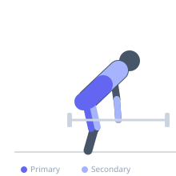
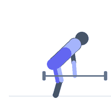

Exercise guide / Axle Bar Deadlift
Axle Bar Deadlift
The axle bar deadlift uses a straight steel bar with a diameter of approximately 50 mm (2 inches) compared to the standard 28–32 mm Olympic barbell, which increases grip demand dramatically due to the larger circumference that the hand must span. The movement pattern is identical to a conventional barbell deadlift in terms of posterior chain loading, but the grip becomes the primary limiting factor at heavy loads, making it an effective training tool for grip strength development. It is a contested lift in strongman competition alongside the standard deadlift.
Primary muscles
erector spinae
gluteus maximus
biceps femoris long head
semitendinosus
Secondary muscles
vastus lateralis
trapezius upper
flexor carpi radialis
flexor carpi ulnaris
Stabilizers
transverse abdominis
rhomboid major
Equipment
Trap Bar (Hex Bar)


Starting position
- Stand with feet hip-width apart, toes pointing forward or slightly out. The axle bar rests at mid-shin. Grip the bar with a double-overhand grip (straps are permitted in training but not all competitions). Push hips back, chest up, neutral spine.
Setup
- Note that the axle bar typically does not rotate like an Olympic barbell — the entire bar spins with the hands, which further increases grip demand. Load using bumper plates or standard plates with appropriate diameter.
Steps
- Step 1: Stand with feet hip-width, bar over mid-foot. Hinge the hips back and reach for the bar with a double-overhand grip, hands just outside the legs.
- Step 2: Take slack out of the bar by pulling the lats back and down. Brace the core with a full breath (Valsalva).
- Step 3: Initiate the pull by pushing the floor away with both feet. Keep the bar against the shins and thighs throughout the ascent.
- Step 4: Extend the hips and knees simultaneously, maintaining a neutral spine. The bar passes the knees and the hips drive forward to lockout.
- Step 5: At lockout, stand fully upright with hips extended and shoulders back. Lower the bar under control or drop from lockout (competition style).
Coaching cues
- Squeeze the bar like you are trying to crush it
- Push the floor away — do not think about pulling the bar up
- Keep the bar dragging up the shins and thighs
Breathing
- Take a full breath into the belly and brace hard before the pull begins. Hold the brace throughout the rep. Exhale at lockout.
Range of motion
- Full hip extension at lockout. The bar travels from the floor to the hip crease in a straight vertical path.
Tempo
- Strength: 1–3 reps × 5–6 sets. Grip conditioning: 5 reps × 4 sets at a moderate load. Rest 3–5 minutes for heavy sets.
Common mistakes
- Attempting a grip-intensive axle deadlift without first developing adequate double-overhand grip strength on a standard barbell
- Opening the fingers during the pull due to grip fatigue — this causes the bar to roll and dramatically increases drop risk
- Rounding the lower back due to the grip failing before the posterior chain
Safety
- The bar may slip without warning on heavy loads due to the large diameter — have crash mats or bumper plates and be prepared to drop the bar
- Build to heavy axle deadlift weights gradually — the grip demand exceeds that of a standard barbell at the same absolute weight
Training
- strength: 1–5 reps
- hypertrophy: 3–8 reps
- strength: 4–6 sets
- Rest: {'strength': 300, 'hypertrophy': 180}